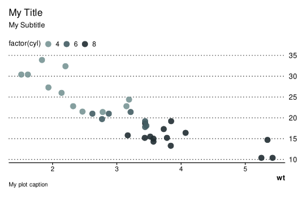

![]()
# Specify your sequential and qualitative palettes
thematic::thematic_on(
bg = "transparent", fg = "#333333", accent = pal["cyan"],
font = font_spec("Roboto Condensed"),
sequential = sequential_gradient(fg_weight=.5, bg_weight=.5, fg_low=FALSE),
qualitative = alpha(pal[1:12], .85)
)With the release of Quarto 1.4, markdown-based publishing is gaining popularity, way beyond the scientific community. Multilingual text-based documents (such as Rmarkdown and Jupyter notebooks) that combine executable code chunks with formatted prose greatly simplify the process of drafting, iterating, generating, documenting, sharing and reproducing computable research experiments.
Old-time researchers and engineers have long used Emacs Org-Mode1 along with its wild hordes of keyboard shortcuts2 to achieve similar results thanks to Eric Schulte’s incredible babel extension to Org-Mode (see Schulte et al. 2012) and to John MacFarlane’s Pandoc document converter library – but nowadays Quarto makes use of more efficient parsers and runtime engines (Sass, Deno) and adds in-browser real-time rendering of documents.
1 For folks born in this century, to babel (elips) or to sweave (R) is the process of compiling text documents that include both static markup and executable scripts.
The concept of Literate programming was introduced in 1984 by the mathematician Donald Knuth and was widely popularized thereafter in the engineering community thanks to org-mode in the Emacs editor.
Emacs Org-Mode was created by the astronomer Carsten Dominik in 2003 and remains to this day one of the most used and madly loved note-taking and GTD (Get-Things-Done) tools, with many of its functionality (agenda, tags, etc.) yet to be ported to any markdown engine.
2 Only keyboard, Baby!

As I am migrating my old blog posts to the new Quarto markdown syntax, this post briefly outlines my process for creating a custom Bootstrap theme for this revamped website. Feel free to reuse my theme.scss Sass file and tidbits.
CSS Grid System
One of the many great features of Quarto is that the framework uses the full flexibility of Bootstrap v5.3 grid system, with a few handy classes to help precisely position content on a page, in particular:
- 2 predefined (column-based) page layouts:
page-layout: article(this document), andpage-layout: full
- 6 column classes to control content width (shown below)
- 2 margin classes to shift content into the left or right column (like that XKCD comics):
<div class="column-margin">, and<span class="aside">
- 8 classes to overflow content into the left or right margin
For example I use Quarto {.column-screen} CSS class to place a flushed banner directly below the post header, as a way to highlight static or dynamic content3. Here is the R code chunk to achieve this, which output inside a <div class="column-screen"> element, like the map above.
3 Note that, as of time of writing, this will push and collapse the TOC to the top of the page until the user scrolls past the first <div class="column-screen"> element.
```{r}
#| column: screen
library(leaflet)
leaflet(width="100%", height="15em") %>% addTiles() %>%
addMarkers(-8.65406047010657, 41.14426475811268,
label="Me, as I'm writing this post. Read on, tips below!",
labelOptions=labelOptions(textsize="1rem"))
```There are new Quarto CSS classes to help control content width and placement.
.column-body
.column-body-outset
.column-page
.column-page-inset
.column-screen
.column-screen-inset-shaded
Finally any layout is achievable using stackable <div class="g-col-{width}"> columns inside a custom <div class="grid"> element (see color boxes below). The full system summarized here, copied straight from Quarto online (awesome) documentation4.
4 Refer to Quarto CSS classes official documentation.
| Column | Code Cell column |
Class Name |
|---|---|---|
| Body | |
|
| Page Inset | |
|
| Page | |
|
| Screen Inset | |
|
| Screen | |
|
| Margin | |
|
A paragraph right next to table.
Color Scheme
Choosing a color scheme is easy, you can start from your favorite photo or graphic and upload it to one of the many online color palette generators to extract base and accent colors. Below I have selected a standard 12-color palette that simply strives to complement my decade old Kubuntu desktop5 (in a light version). A remarkable generator I have used for many UI themes is .
5 KDE, 30 years later, still going strong! 
library(htmltools)
pal <- c(
cyan = "#789494",
teal = "#445e64",
dark = "#222e32",
pink = "#aea39a",
purple = "#98796f",
indigo = "#9b59b6",
blue = "#3daee9",
green = "#27ae60",
yellow = "#edcd37",
orange = "#f67400",
red = "#da4453",
light = "#fefefe"
)
n <- c(rep(2,6), rep(4,6))
lapply(1:length(pal),
function(i) div(class=paste0(
"g-col-", n[i], " small rounded text-center p-2 bg-", names(pal)[i]),
HTML(names(pal)[i], "<br/>(", pal[[i]], ")"))) |>
tagList() |>
div(class="grid", style="--bs-gap: .5rem;")cyan
( #789494 )
( #789494 )
teal
( #445e64 )
( #445e64 )
dark
( #222e32 )
( #222e32 )
pink
( #aea39a )
( #aea39a )
purple
( #98796f )
( #98796f )
indigo
( #9b59b6 )
( #9b59b6 )
blue
( #3daee9 )
( #3daee9 )
green
( #27ae60 )
( #27ae60 )
yellow
( #edcd37 )
( #edcd37 )
orange
( #f67400 )
( #f67400 )
red
( #da4453 )
( #da4453 )
light
( #fefefe )
( #fefefe )
Block Elements
Simple indented blockquote with (small) source.
Blockquote title
Blockquote content comes here…
– And small description
Bootstrap built-in callout blocks and cards components are readily available in Quarto markdown with the usual semantic colors.
Note
This is a note.
::: {.callout-tip}
### Callout title
This is an example of a callout with a title.
:::
Callout title
This is an example of a callout with a title.
::: {.callout-caution collapse="true"}
### Expand to learn about collapse
This is an example of a 'folded' caution callout
:::
Expand to learn about collapse
This is an example of a “folded” caution callout that can be expanded by the user. You can use collapse="true" to collapse it by default or collapse="false" to make a collapsible callout that is expanded by default.
Important
This is a callout with a title.
Warning
This is a callout with a title.
Typography
Bootstrap default line-height and font sizing typically work. No change here aside from using PT Serif, Oswald, and Roboto Condensed fonts. This is how bold, italic, and small text look like. Here is superscript and subscript text, and strikethrough notes. Semantic colors with .text-info provide accented text. I have added 2 background classes for my own use .shaded and .striped. I also use secondary font for all post metadata, end and margin notes, and for captioning.
Heading 2
Sample paragraph content.
Heading 3
Sample paragraph content with list of items:
- List 1
- List 2
- List 3
Ordered list:
- List 1
- List 2
- List 3
Heading 4
Sample paragraph content.
Blockquote title
Blockquote content comes here…
– And small source
Heading 5
Sample paragraph content.
Here is a footnote reference6 and another much longer one7. Caption and footnote placement can be controlled in the config files _quarto_yml and/or _metadata.yml, or directly in the YAML front matter.
6 Here is the footnote.
7 Here’s one with multiple blocks.
With subsequent paragraphs indented to show that they belong to the previous footnote.
Tables
I prefer my normal tables slightly more condensed than Bootstrap’s default and to resemble LaTeX typesetting, so made a few simple changes here.
| apple | 2.05 |
| pear | 1.37 |
| orange | 3.09 |
| fruit | price |
|---|---|
| apple | 2.05 |
| pear | 1.37 |
| orange | 3.09 |
| fruit | price |
|---|---|
| apple | 2.05 |
| pear | 1.37 |
| orange | 3.09 |
| fruit | price |
|---|---|
| apple | 2.05 |
| pear | 1.37 |
| orange | 3.09 |
knitr::kable(mtcars[1:6, 1:10])| mpg | cyl | disp | hp | drat | wt | qsec | vs | am | gear | |
|---|---|---|---|---|---|---|---|---|---|---|
| Mazda RX4 | 21.0 | 6 | 160 | 110 | 3.90 | 2.620 | 16.46 | 0 | 1 | 4 |
| Mazda RX4 Wag | 21.0 | 6 | 160 | 110 | 3.90 | 2.875 | 17.02 | 0 | 1 | 4 |
| Datsun 710 | 22.8 | 4 | 108 | 93 | 3.85 | 2.320 | 18.61 | 1 | 1 | 4 |
| Hornet 4 Drive | 21.4 | 6 | 258 | 110 | 3.08 | 3.215 | 19.44 | 1 | 0 | 3 |
| Hornet Sportabout | 18.7 | 8 | 360 | 175 | 3.15 | 3.440 | 17.02 | 0 | 0 | 3 |
| Valiant | 18.1 | 6 | 225 | 105 | 2.76 | 3.460 | 20.22 | 1 | 0 | 3 |
Apply Themed Colors to R Graphics
I make use of R thematic::thematic_on() package to auto-generate base graphics, lattice and ggplot2 font and palettes that match the new Bootstrap scheme.
Note that calling thematic_on() modifies R session getOption("ggplot2.discrete.colour") and getOption("ggplot2.discrete.fill") – and that’s how the underlying “magic” happens.
Next I apply (slightly opinionated) changes to ggthemes::theme_foundation(), mostly transparent fills, condensed font, simplified axes, and a y-axis on the right side.
These graphic customizations are further documented in ./R/theme.R in this repo, so as to handle dependencies, and because I want to use them more flexibly across my blog posts. Obviously when visualizing scientific and spatial datasets the choice of color scales requires good care, so the use of thematic_on() is often not sufficient, but it’s a good start here nonetheless.
Show all code
./R/theme.R
#' Default `mblabs` 12-color palette
#'
#' Custom named qualitative color palette with 12 hues derived from `mblabs`
#' Bootstrap theme.
#'
#' @keywords datasets
#' @name pal
#' @format A named character vector of hex color codes
#' @examples
#'
#' pie(rep(1, 12), col=pal, labels=names(pal), border="white", clockwise=TRUE)
#'
#' @export
pal = c(
cyan = "#789494",
teal = "#445e64",
dark = "#222e32",
pink = "#aea39a",
purple = "#98796f",
indigo = "#9b59b6",
blue = "#3daee9",
green = "#27ae60",
yellow = "#edcd37",
orange = "#f67400",
red = "#da4453",
light = "#f9f9f9"
)
#' Color ramp based on `mblabs` theme colors
#'
#' Default qualitative color ramp derived from `mblabs` Bootstrap theme.
#'
#' @param x number of colors to interpolate
#' @inheritParams grDevices::colorRamp
#' @inheritDotParams grDevices::colorRamp
#' @return A function to interpolate colors
#' @examples
#' x <- rchisq(100, df=4)
#' hist(x, freq=FALSE, ylim=c(0, 0.2), col=labs.colors(20), border="white")
#' hist(x, freq=FALSE, ylim=c(0, 0.2), col=labs.colors(8), border="white")
#'
#' @export
labs.colors <- function(x, colors=unname(pal), ...) colorRampPalette(colors, ...)(x)
#' Apply graphic color palettes
#'
#' Set `mblabs` default values to `thematic::thematic_on()`, and modify
#' `lattice` and `ggplot` color palettes and fonts.
#'
#' @inheritParams thematic::thematic_on
#' @inheritDotParams thematic::thematic_on
#' @return A global graphic theme
#' @importFrom thematic thematic_on font_spec sequential_gradient
#' @importFrom scales alpha
#' @examples
#' theme_labs_on()
#' lattice::show.settings()
#'
#' @export
theme_labs_on <- function(
bg = "transparent",
fg = "#090909",
accent = pal[[1]],
font = "Roboto Condensed",
sequential = sequential_gradient(fg_weight=.5, bg_weight=.5, fg_low=FALSE),
qualitative = alpha(labs.colors(12), .9),
...
) thematic_on(
bg, fg, accent, font=font_spec(font), sequential, qualitative, ...)
#' Default `ggplot2` theme for `mblabs`
#'
#' Custom `ggplot` theme for `mblabs` website.
#'
#' @inheritParams ggthemes::theme_foundation
#' @param base_bg Plot, panel, legend background
#' @param base_color Color for text and line elements
#' @inheritDotParams ggplot2::theme
#'
#' @return A custom `ggplot2` theme
#' @importFrom ggthemes theme_foundation
#' @examples
#' require(ggplot2)
#'
#' ggplot(mtcars, aes(factor(carb), mpg, fill=factor(carb))) + geom_col() +
#' guides(y=guide_none(), y.sec=guide_axis()) +
#' labs(
#' title = "Plot with default fonts and color scheme",
#' subtitle = "My very long subtitle with many units",
#' caption = "My very long plot caption with many references.") +
#' theme_labs()
#'
#' theme_labs_on()
#'
#' ggplot(mtcars, aes(factor(carb), mpg, fill=factor(carb))) + geom_col() +
#' guides(y=guide_none(), y.sec=guide_axis()) +
#' labs(
#' title = "Same plot with `mblabs` font and color scheme",
#' subtitle = "My very long subtitle with many units",
#' caption = "My very long plot caption with many references.") +
#' theme_labs()
#'
#' @export
theme_labs <- function(
base_size = 12,
base_family = NULL, # use Thematic theme,
base_bg = NULL, # use Thematic theme
base_color = NULL, # use Thematic theme
...
) theme_foundation(
base_size = base_size,
base_family = base_family
) + theme(
plot.margin = unit(c(1, 1, 1, 1), "lines"),
text = element_text(color=base_color, lineheight=.9),
line = element_line(linetype=1, color=base_color),
rect = element_rect(fill=NA, linetype=0, color=NA),
plot.background = element_rect(fill=base_bg, color=NA),
panel.background = element_rect(fill=base_bg, color=NA),
panel.grid = element_line(color=NULL, linetype=3),
panel.grid.major = element_line(color=base_color),
panel.grid.major.x = element_blank(),
panel.grid.minor = element_blank(),
strip.background = element_rect(),
plot.title = element_text(
face="plain", hjust=0, size=base_size*1.33),
plot.subtitle = element_text(margin=margin(0,0,1,0, "lines"),
face="plain", size=base_size, hjust=0),
strip.text = element_text(
face="bold", hjust=0, size=base_size),
plot.caption = element_text(margin=margin(0,0,0,0, "lines"),
size=base_size*0.8, hjust=0),
axis.text = element_text(size=base_size),
axis.text.x = element_text(color=NULL, size=base_size*0.9),
axis.text.y = element_text(color=NULL, hjust=0),
axis.title.x = element_text(color=base_color, size=base_size, face="bold", hjust=1),
axis.title.y = element_blank(),
axis.ticks = element_line(color=NULL),
axis.ticks.length = unit(0.25, "lines"),
axis.ticks.y = element_blank(),
axis.ticks.x = element_line(color=NULL),
axis.line = element_line(),
axis.line.y = element_blank(),
legend.background = element_rect(fill=NA, color=NA),
legend.box.background = element_rect(fill=NA, color=NA),
legend.title = element_text(size=base_size*1.0, hjust=0, vjust=1),
legend.margin = margin(0.25,0,0,0, "lines"),
legend.key.size = unit(.85, "lines"),
legend.text = element_text(size=base_size*0.95, hjust=0),
legend.position="top", legend.justification=0,
legend.direction="horizontal",
...
)
#' Default themed `ggplot` for `mblabs`
#'
#' A themed `ggplot` with custom element sizes, colors, and guides for `mblabs` website.
#'
#' @inheritParams ggplot2::ggplot
#' @param pos_x Position of x-axis (bottom or top)
#' @param pos_y Position of y-axis (right or left)
#' @inheritDotParams theme_labs
#'
#' @return A `ggplot2` object with new theme elements applied
#' @import ggplot2
#' @examples
#' require(ggplot2)
#' theme_labs_on()
#'
#' gglabs(mtcars, aes(factor(carb), mpg, fill=factor(carb))) + geom_col() +
#' guides(y=guide_none(), y.sec=guide_axis()) +
#' labs(
#' title = "My Long and Descriptive Plot Title",
#' subtitle = "My very long subtitle with many units",
#' caption = "My very long plot caption with many references.")
#'
#' gglabs(mtcars, aes(wt, mpg, color=carb)) +
#' geom_point() + geom_smooth() +
#' labs(
#' title = "My Title",
#' subtitle = "My Subtitle",
#' caption = "My plot caption")
#'
#' gglabs(mtcars, aes(wt, mpg, color=factor(cyl))) +
#' geom_point() +
#' labs(
#' title = "My Title",
#' subtitle = "My Subtitle",
#' caption = "My plot caption")
#'
#' @export
gglabs <- function(
data = NULL,
mapping = aes(),
pos_x = c("bottom", "top"),
pos_y = c("right", "left"),
...) {
pos_x = match.arg(pos_x)
pos_y = match.arg(pos_y)
ggplot(data, mapping
) + guides(
x = if(pos_x=="top") guide_none() else guide_axis(),
x.sec = if(pos_x=="bottom") guide_none() else guide_axis(),
y = if(pos_y=="right") guide_none() else guide_axis(),
y.sec = if(pos_y=="left") guide_none() else guide_axis()
) + theme_labs(...)
}Finally let’s output a couple of categorical and continuous ggplot and lattice charts below to make sure everything looks adequate.
# Apply and check my new graphic theme
library(mblabs)
library(ggplot2)
theme_labs_on()ggplot(mtcars, aes(factor(carb), mpg, fill=factor(carb))) + geom_col() +
guides(y=guide_none(), y.sec=guide_axis()) +
labs(
title="My Long and Descriptive Plot Title",
subtitle="My very long subtitle with many units",
caption="My very long plot caption with many references.") +
theme_labs()
ggplot(mtcars, aes(wt, mpg, color=carb)) +
geom_point() + geom_smooth() +
guides(y=guide_none(), y.sec=guide_axis()) +
labs(
title="My Long and Descriptive Plot Title",
subtitle="My very long subtitle with many units",
caption="My very long plot caption with many references.") +
theme_labs()Note that the code chunk below produces a PNG instead of SVG file. I also set knitr option globally fig-dpi: 220 so plots still look decent when printed to paper (though of course it’s not adequate on long pages with many plots).
```{r}
#| fig-format: png
gglabs(faithfuld, aes(waiting, eruptions, z=density)) +
geom_raster(aes(fill=density)) +
geom_contour()
```
gglabs(mtcars, aes(wt, mpg, color=factor(cyl))) + geom_point() +
labs(title="My Title", subtitle="My Subtitle", caption="My plot caption")
Note that thematic_on() also does a little magic with R base graphics par() options. This is important as many advanced statistical and spatial libraries in R continue to make use of R base graphics library.
lattice::show.settings()
x <- rchisq(100, df=4)
hist(x, freq=FALSE, ylim=c(0, 0.2), col=1:11, border=12)
grid(NA, NULL, col=4)
curve(dchisq(x, df=4), col=2, lty=2, lwd=2, add=TRUE)
References
Schulte, Eric, Dan Davison, Thomas Dye, and Carsten Dominik. 2012. “A Multi-Language Computing Environment for Literate Programming and Reproducible Research.” Journal of Statistical Software 46 (3): 1–24. https://doi.org/10.18637/jss.v046.i03.
Citation
BibTeX citation:
@online{bacou2023,
author = {BACOU, Melanie},
title = {Migrating This {Blog} from {*Distill*} to {*Quarto*}
{Publishing} {Framework}},
date = {2023-10-01},
url = {https://mbacou.com/posts/2022-12-01-theme/},
langid = {en},
abstract = {A post about literate programming in general and Quarto
formats in particular to document migrating this personal blog from
{[}Distill{]}(https://rstudio.github.io/distill/) to
{[}Quarto{]}(https://quarto.org/). Compared with *J.J. Allaire’s
Distill for R Markdown*, **Posit® Quarto Markdown** uses a new
templating system built on top of {[}Bootstrap
v5.3.1{]}(https://getbootstrap.com/docs/5.3/customize/overview/)
with new page layouts, extended export formats, and more flexible
publishing workflows. This post briefly outlines my process for
creating a custom theme for this Quarto-generated website, as well
as design tweaks I have made along the way.}
}
For attribution, please cite this work as:
BACOU, Melanie. 2023. “Migrating This Blog from *Distill* to
*Quarto* Publishing Framework.” October 1, 2023. https://mbacou.com/posts/2022-12-01-theme/.